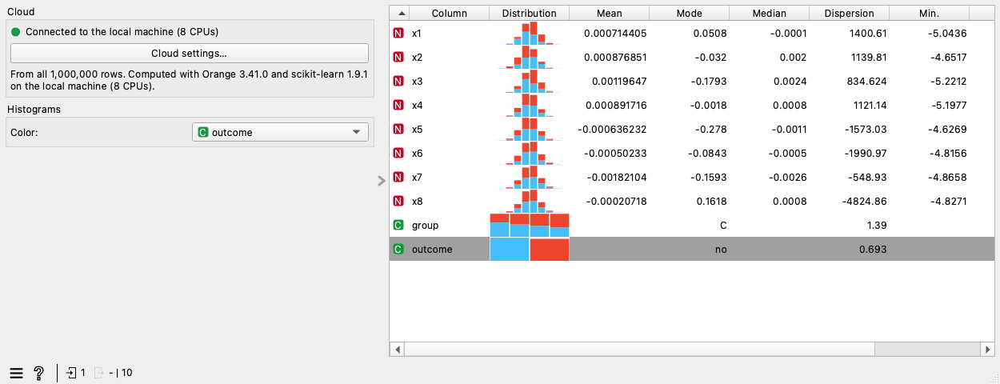

Basic statistics of every column of a cloud table, computed on all rows on the machine.

Like every Cloud widget, it has a Cloud box at the top: whether a machine is connected, Cloud settings…, and what the last job ran with, how long it took and what it cost. See Cloud widgets.
It works like Orange's Feature Statistics: a histogram, the mean, mode, median, dispersion, minimum, maximum and the missing values of each column. Color splits the histograms by a categorical column. Click a header to sort, and select columns for the Reduced Data output.